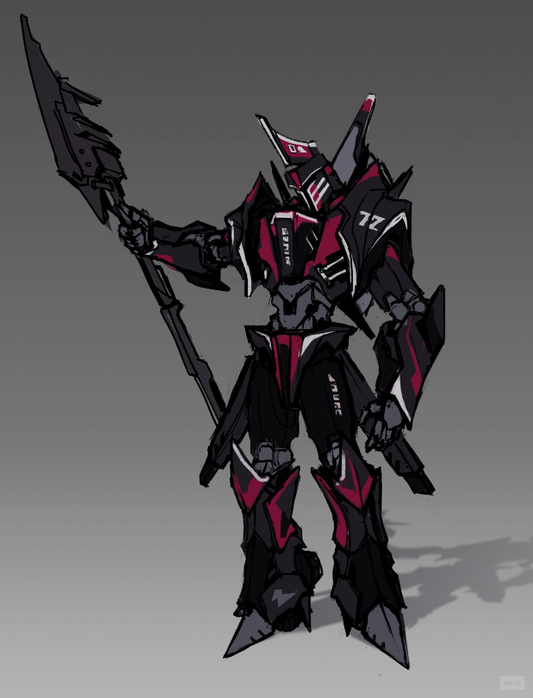

Галерея и Персонажи
Главный герой

Мотивация: Выходец из среднего класса, привыкший быть в центре внимания. После публичного позора на фоне успеха бывшего соратника он пытается восстановить уважение окружающих и свою разбитую самооценку.
Конфликт: Слишком горд и самоуверен. Смена деталей дается тяжело — нужно отказаться от своего «оригинала» ради лучшего набора.
Разработка
Нажмите на миниатюру ниже, чтобы открыть разработку концепт-арта главного героя.